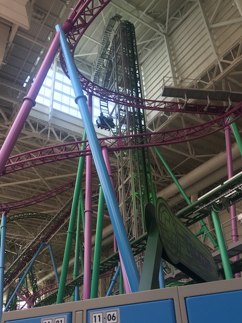
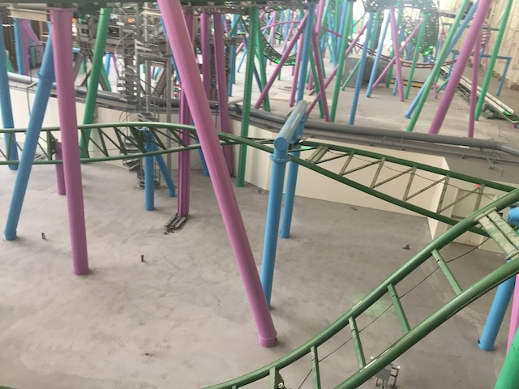

| |
TMNT Shellraiser Review

For today's review, we are heading to Nickelodeon Universe (American Dream) to review the parks Euro Fighter, TMNT Shellraiser. Now, this is sort of a hybrid coaster. As this isn't really a true Euro Fighter. It's sort of half Euro Fighter, half Infinity Coaster. This basically means that the ride has a launch. But hey. Gerstlauter is calling this a Eurofighter, and I really enjoy its clone in Japan (Yeah, this ride is a clone. But at least they're cloning one of the better Eurofighters). So yeah. It's clear that this thing is a Eurofighter. And it's a really good one. So yeah. Let's hop in the cars, pull down the OTSRs, and away we go! We turn around and head down a small drop. Now on Takabisha, this part of the ride is all in the dark. So you can't really tell what's going on. Not here. This ride is completely naked and you can see everything that is part of the hidden section on Takabisha. And...I'm not gonna lie. It's a lot more fun in the dark where you don't know what's going on. Because you realize that it's a lot less than what you initally expect. So after the small little drop, you go around a turn and head straight into an inline twist. Well, at least this inline twist is really slow and gives us some GREAT hangtime. Though it is cooler in the dark when you don't know what's going on and just....feel upsidedown. Anyways, after that, we turn, go down a small drop, and BAM!!!! We launch! Now we're really gaining some speed. Sure, it's not the strongest launch out there, but it's still a lot of fun. We then rise up into a giant corkscrew. Though, it doesn't feel like one. There's no whip or anything to it. It just sort of feels like a big giant inversion. Big, kind of floaty, and a lot of fun. We then head into what one of the most interesting . The Banana Roll. This is a sort of....It's kind of like if you fused a Cobra Roll into one single inversion. That, or an overbanked turn, except it's overbanked so much that it pretty much becomes an inversion. Or it's like a cutback, only you took that cutback in Adobe Photoshop, and then vertically stretched it dramaticly. Regardless of how you describe the Banana Roll, it's a very fun inversion. We then head into another corkscrew. Much like the first corkscrew we went through, this thing is massive, has no whip or snap to it at all, and is just another big floaty inversion for us to cruise through, getting a little bit of hangtime on the way. We head through another sort of wave hill. It's fun, but sadly, there are no laterals, and there's no airtime. Bummer. We head up a small hill and glide into the brake run. But this isn't the end. This is just Part 1 of the ride for us. We then turn around and head straight to the giant vertical lifthill. Oh yeah. I forgot this was a Eurofighter for a little bit. We then begin climbing up towards the sky. I'm not sure why, but I love vertical lifthills. We reach the top, and....yeah. This ride pulls a HangTime, where it goes down at a weird ramp, just to stop. Yeah, this thing is Gerstlauers attempt at ripping off the B&M Dive Machine. Here, it just feels awkward. Just wanna drop now. Hey, you get a great view of Shellraiser's twisted layout from up here. There's also the view. I know you'd think that Takabisha just simply wins due to it being by Mt. Fuji. But keep in mind. You can see the NYC skyline from the windows here. So it's a lot closer than you'd think (Probably still would give the win to Takashiba though). Then we let go and head down the beyond vertical drop. Now I should note something. TMNT Shellraiser and Takabisha have the steepest drop in the world at 121 degrees (Shellraiser may claim to be half a degree steeper, but that's like one twin saying "We're not the same age! I came out first! So I'm 5 minutes older!". F*ck off with that record sh*t! I don't acknowledge it!). Honestly, this drop doesn't feel that much different from the other Eurofighters despite being a bit steeper. Still a lot of fun. We then twist up until we're upsidedown, and then drop back rightside up to the ground. Not too many Eurofighters have dive loops. We then enter what RCDB claims is an inverted top hat. But this doesn't feel at all like the ones on the Mr. Freeze clones. This feels more like another smaller Banana Roll. Or a giant cutback. Hey! I have no problem with that. We then drop out of that and go straight into....an Immelmann Loop. God damn it! This thing is nothing but inversions LOL! Just flip up, and twist out of it and to the ground. Speaking of nothing but inversions, we then rise up and hit the brake run! Making the ride literally nothing but inversions aside from its launch and 121 degree drop! But hey! I like it! This ride is freaking fun! I mean, this is the 2nd best (I guess 3rd since I slightly prefer Takabisha. But I just lump them together since they're closer and its truly splitting hairs between the two) Eurofighter! Only being beaten out by Fluch von Novgorod, and that ride has freaking amazing theming! So it's understandable why that takes the win! But yeah! Definetly make sure to give this a ride if you're at Nickelodeon Universe (American Dream).
8/10
Location: Nickelodeon Universe (American Dream)
Opened: 2019
Built by: Gerstlauer
Last Ridden: June 15, 2021
I have ridden this exact same ride at the following parks.
Fuji-Q Highlands
TMNT Shellraiser Photos






Home
|